1 Abstract
Linguistic case offers a useful test of how diagrams connect relational structure, compositional syntax, and uncertainty. This article reviews categorical approaches and supplies an executable collection of deliberately small examples. The implementation includes case-role graphs, pregroup derivations, tensor contractions, synthetic similarity matrices, Bayesian filtering, quantile utilities, and positive-operator-valued measurements. These components share notation, but their mathematical relationships require separate assumptions; a common diagrammatic vocabulary does not establish their equivalence.
The principal contribution is an inspectable comparison of these constructions and their limits. We distinguish generated derivations from illustrative drawings, finite score distributions from Bellman return distributions, presentation statistics from topos invariants, and model-unit prediction errors from physiological measurements. The accompanying suite collects 1627 tests across 81 files; that is a collection count, and a separate source-bound quality receipt records 1627 passing tests with 93.17% line-and-branch coverage (Appendix C). The figure pipeline produces 33 figures from source. All numerical illustrations use synthetic inputs; no corpus study, participant experiment, EEG fit, quantum-hardware run, or deployed-agent security evaluation is reported. Topos-theoretic transfer, cognitive advantages of case diagrams, and case-based authorization remain research proposals with explicit validation requirements. This is working revision 2.4.0; its local validation does not constitute publication or independent mathematical certification.
2 Introduction: Case, Composition, and the Limits of a Shared Diagram
A sentence distinguishes participants and the relations between them. In “Alice chases Bob,” changing which participant occupies the subject position changes the interpretation. A representation that stores only an unordered pair of names loses this distinction. Case diagrams make selected relations visible and provide small objects on which to test composition, uncertainty, and interpretation.
Three meanings of case must remain separate. Morphological case concerns forms and marking; grammatical relations concern positions such as subject and object; semantic roles concern participation in an event. They can correlate without coinciding. NOM is not a universal synonym for agent, and ACC does not always denote a patient. Our examples use role labels as modeling choices, not as a claim that every language has the same inventory.
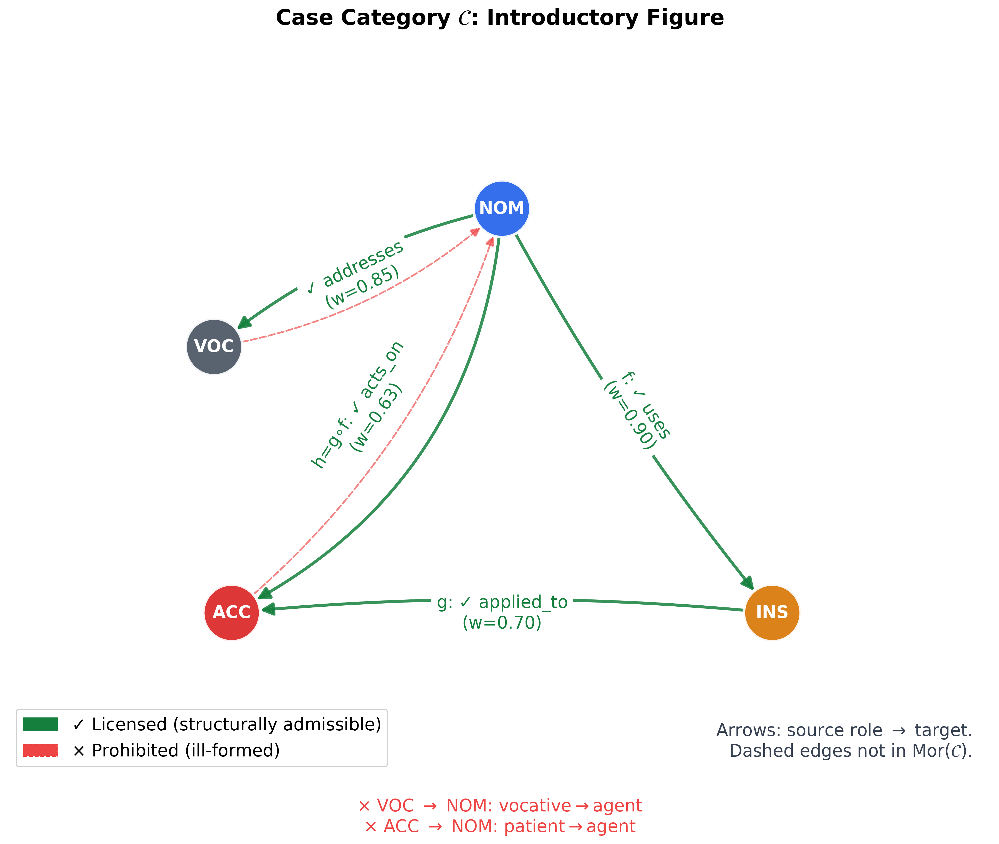
Categorical compositional distributional semantics provides a mathematical account of how typed grammatical reductions can guide operations on word representations (Coecke et al. 2010). Enriched-category constructions give a different route from suitable text-extension probabilities to mathematical structure (Bradley et al. 2021). Neither result implies that an arbitrary role graph, attention matrix, or probability table automatically satisfies the relevant categorical axioms.
2.1 Contributions and evidence
This work contributes a connected exposition and reproducible examples, together with checks that expose where the examples stop. The categorical core distinguishes formal DisCoPy reductions from lightweight role bookkeeping. The numerical core tests normalization, support, composition inequalities, matrix sensitivity, quantile conventions, and measurement validity. The manuscript then uses those contracts to delimit proposed cognitive and security interpretations.
The repository contains no trained linguistic model or empirical dataset. Terms such as prediction, precision, and return in compatibility APIs therefore need the operational definitions given below. A synthetic calculation can verify arithmetic under stated assumptions; it cannot establish those assumptions as facts about language or the brain.
The reading order follows a dependency chain: alignment labels; graph and grammar constructions; semantic evaluation; enrichment and magnitude; the distinct requirements of topos theory; filtering and distributional utilities; synthetic statistical behavior of those utilities; measurement analogies; and proposed agent protocols. The research questions in sec. 3 identify which parts are implemented and which require new evidence. The synthetic-statistics section sec. 17 reports seeded computations of the utilities’ own behavior and adds no empirical claim.
3 Research Questions and Evidence Map
The project asks what can be represented and checked with small case diagrams. It does not test a universal cognitive theory. The distinction matters because the same drawing can be used as a pedagogical aid, a typed derivation, or a scientific hypothesis, with different standards of evidence.
| Question | Present evidence | What remains required |
|---|---|---|
| Can selected argument structures be represented compositionally? | Executable pregroup diagrams and tensor contractions | Language-specific grammar coverage and evaluated parsing |
| Can role similarities form an enriched category? | Explicit axiom checks and max-product closure of a synthetic matrix | Estimated similarities, uncertainty, and justified closure semantics |
| Can case theories be transferred through a common classifying topos? | Theory-presentation containers only | Geometric theories, sites, equivalence witnesses, invariant transport |
| Can uncertainty be updated consistently? | Finite Bayesian filtering and distributional utility tests | Learned generative models and held-out prediction |
| Do diagrams improve human reasoning? | Proposed experimental comparisons | Participants, controlled stimuli, preregistered outcomes |
| Can case labels help enforce agent authority? | A finite role-policy checker | Authenticated provenance, runtime enforcement, adversarial evaluation |
The phrase implemented below means an operation is available and exercised locally. Illustrative denotes a constructed example. Proposed denotes an unimplemented or unevaluated connection. Passing software tests does not promote a proposal to a theorem or an empirical finding.
4 Case Systems and Alignment
Comparative case analysis separates argument roles from their marking. We use S for the sole argument of a canonical intransitive predicate, A for the more agent-like argument of a canonical transitive predicate, and P for its more patient-like argument. Alignment describes how a specified marking system groups these roles. Case marking of full noun phrases, pronouns, and verbal person marking can differ within a language (Comrie 2013).
| Pattern | Grouping in the simplified representation |
|---|---|
| Nominative–accusative | S and A together; P separate |
| Ergative–absolutive | S and P together; A separate |
| Tripartite | S, A, and P distinct |
| Neutral | S, A, and P marked alike |
| Active–stative / split-S | Subclasses of S pattern differently |
| Fluid-S | Some S marking varies with construal or context |
Historical accounts of semantic participation, deep case, dependency, and proto-roles motivate different choices of analytical unit. They should not be treated as interchangeable theories simply because a diagram can display their labels. In particular, a morphological case system does not determine a unique category of semantic relations.
The software’s standard inventory is NOM, ACC, GEN, DAT, INS, LOC, ABL, VOC. ERG, ABS, S, A, and P are additional enum labels used in alignment examples, beyond the 8 standard members. The standard inventory is a convenience, not a universal eight-case ontology. English names in the examples carry assigned grammatical-role metadata; most English full noun phrases do not inflect for nominative versus accusative case.
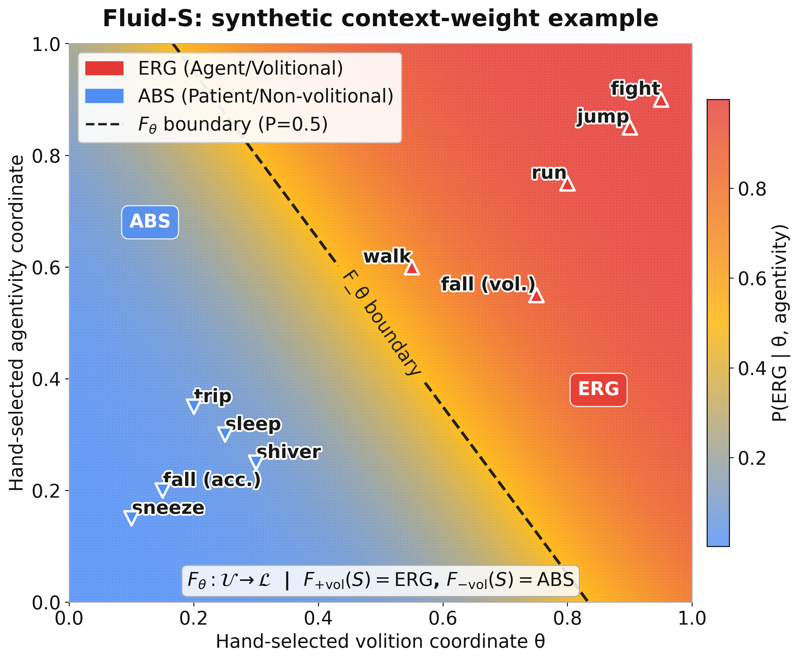
A context probability in the Fluid-S API specifies a mixture between two case-label assignments. The numerical mixture is well-defined once its endpoints are supplied. Establishing that this mixture describes a language would require documented constructions, annotator agreement, and predictive evaluation. Language names in legacy convenience functions identify the motivating analogy rather than a validated grammar.
5 Case-Role Graphs and Categorical Presentations
The Python CaseCategory stores a finite role set and a
list of labelled arrows. An arrow has source, target, label, and a
weight in \([0,1]\). Identity arrows
and composite arrows can be constructed. For composable \(f:A\to B\) and \(g:B\to C\), the implementation multiplies
weights:
\[ w(g\circ f)=w(g)w(f). \qquad{(1)}\]
This gives a useful presentation of relational paths. The stored
generator list need not contain every composite. Endpoint and weight
checks therefore should not be described as a complete implementation of
arbitrary hom-sets and their equations. is_well_formed()
checks the stored representation; it does not prove that a proposed
linguistic analysis is adequate.
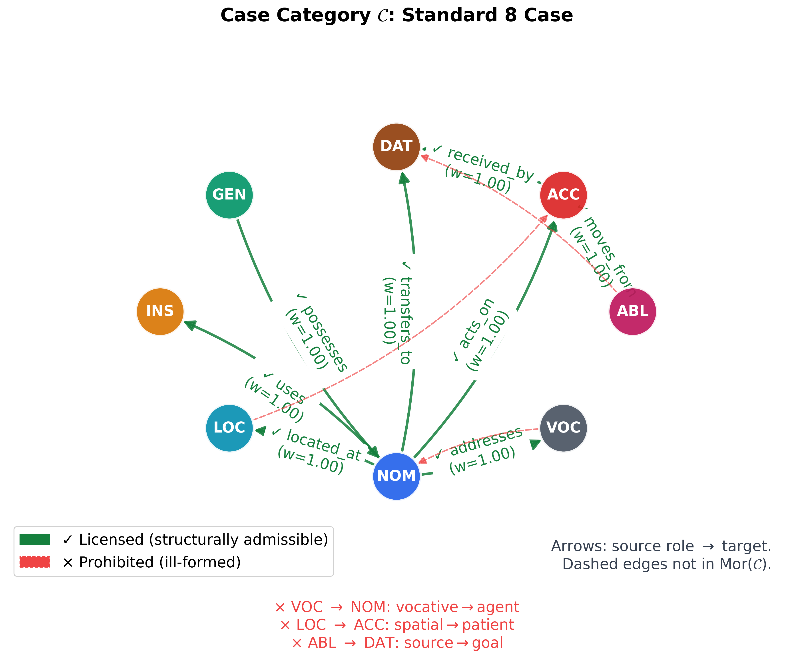
An alignment map assigns source labels to target labels. The two common groupings of S, A, and P differ as maps on named arguments, even when their unlabelled quotient sets have the same cardinality. In particular, NOM alone cannot determine whether a source argument was S or A, so an accusative-to-ergative mapping cannot generally recover the original argument from its surface case.
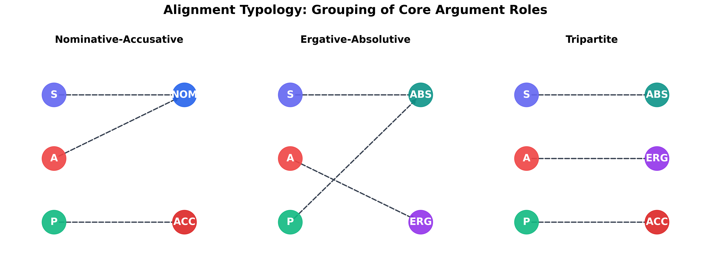
AlignmentFunctor is a lightweight object/arrow mapping
helper. Its identity and composition predicates compare endpoints and
weights; they do not verify all target-hom membership or labelled-arrow
equations. Some alignment factories contain only objects, so tests over
their stored nonidentity arrows can be vacuous. A mathematical functor
claim requires an explicit source and target category and preservation
of their defining relations.
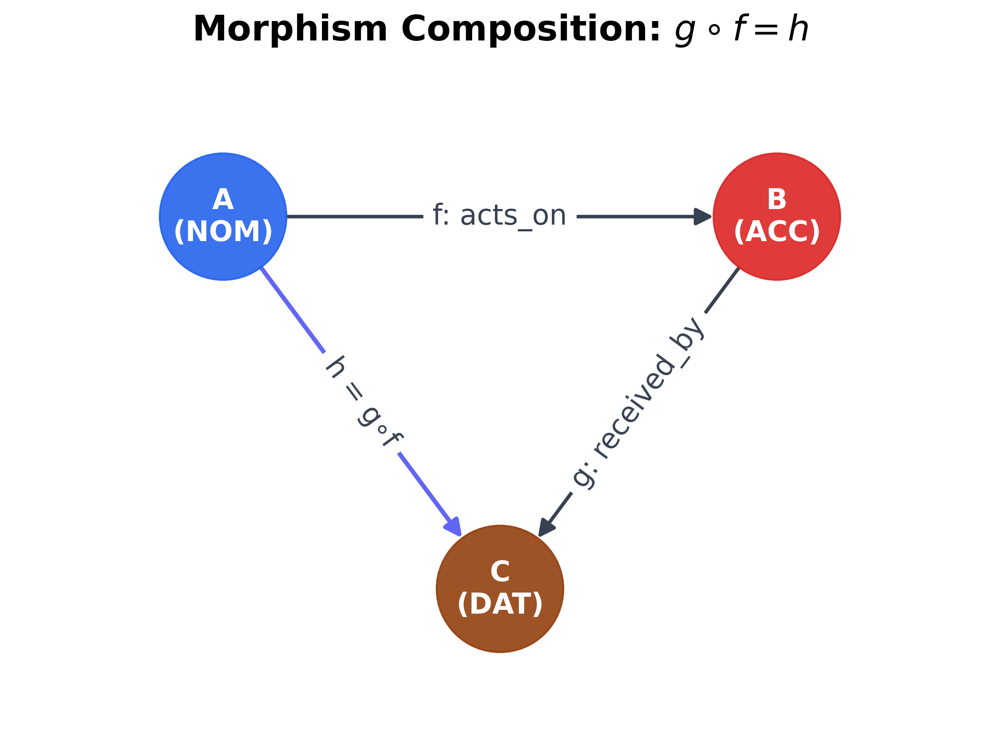
For actual functors \(F,G:C\to D\), a natural transformation requires components \(\eta_A:F(A)\to G(A)\) with
\[ G(f)\circ\eta_A=\eta_B\circ F(f). \qquad{(2)}\]
The natural-transformation helper checks its supplied components and finite source arrows using the project’s representation. This is useful for examples, but neither a dative alternation nor a cross-linguistic correspondence becomes a natural transformation without the required maps and equations.
6 Categorial Grammar and Executable Reductions
Categorial grammars associate lexical expressions with types that determine how they combine. In a pregroup presentation, a noun type \(n\) has left and right adjoints. Ordered reductions use \(n^l n\leq 1\) and \(n n^r\leq 1\), together with the corresponding expansion inequalities. These are directional operations; arbitrary wire exchange is not an axiom of a nonsymmetric pregroup.
For the hand-assigned types of “Alice chases Bob,” the reduction is
\[ n\,(n^r s n^l)\,n\longrightarrow s. \qquad{(3)}\]
The implementation builds words and cups with DisCoPy. The assertion below verifies the codomain of this specified derivation. It does not discover lexical types or establish grammaticality independently of them.
from discopy.rigid import Ty, Box, Cup, Id
n, s = Ty("n"), Ty("s")
words = (Box("Alice", Ty(), n)
@ Box("chases", Ty(), n.r @ s @ n.l)
@ Box("Bob", Ty(), n))
diagram = words >> (Cup(n, n.r) @ Id(s) @ Cup(n.l, n))
assert diagram.cod == s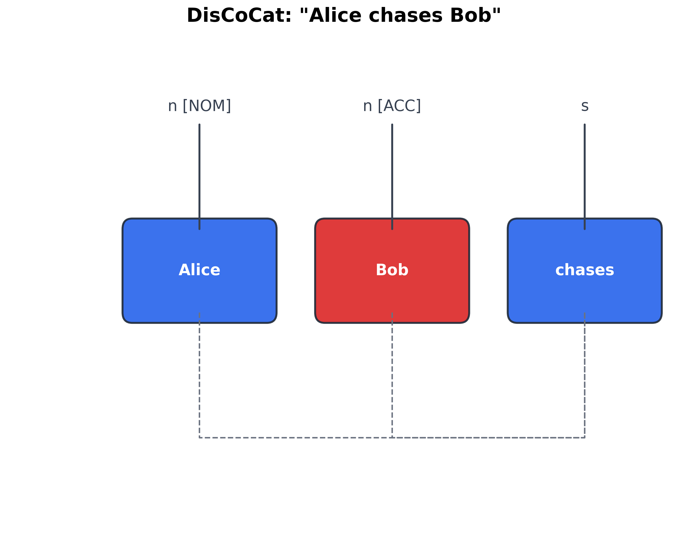
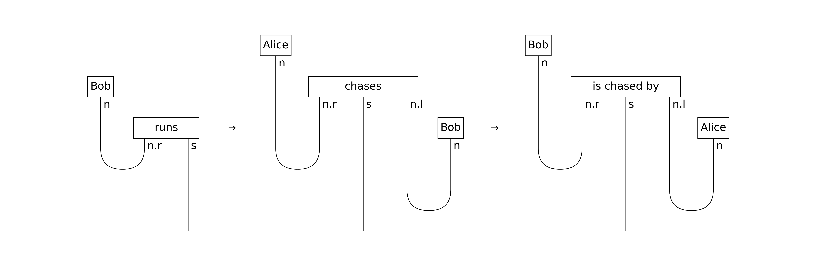
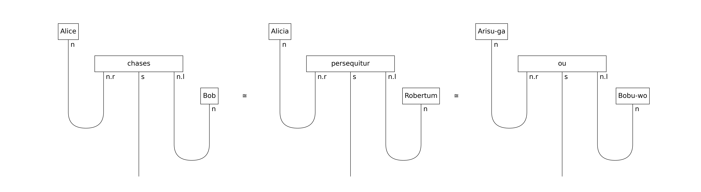
String diagrams represent equations within a specified categorical calculus. A drawing is a proof only when the allowed rewrites and interpretation have been established. Visual similarity alone does not prove a linguistic universal, semantic equivalence, or independence from word order.
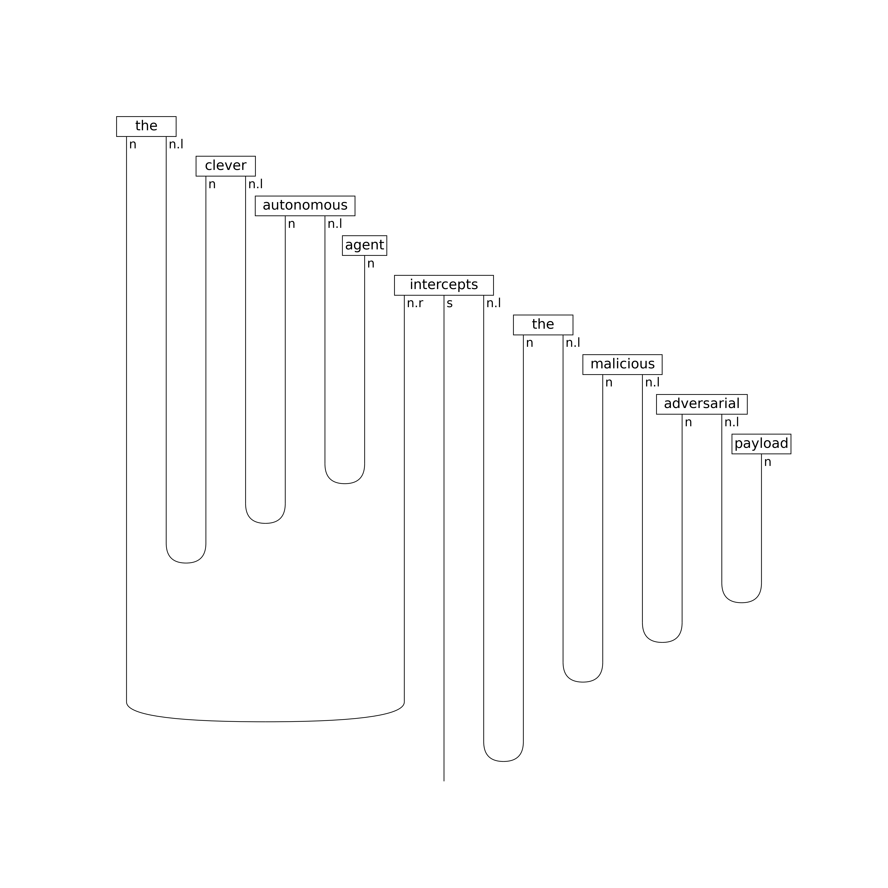
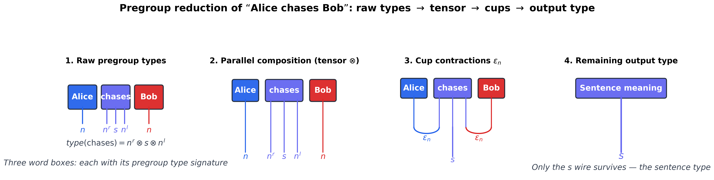
7 Case Features and Voice Alternation
A case label attached to a drawing is different from a case-refined
type enforced by a parser. Most constructors in this project use the
same noun object Ty("n") and store NOM/ACC distinctions as
metadata. They therefore do not reject every mismatched case
feature.
A proposed refinement can introduce distinct objects \(n_{\mathrm{NOM}}\) and \(n_{\mathrm{ACC}}\) and type a transitive verb as \(n_{\mathrm{NOM}}^r s n_{\mathrm{ACC}}^l\). Then the intended reductions involve those exact objects. This requires corresponding lexical assignments and explicit coercions where a grammar licenses them; it is not achieved by decorating an unrefined diagram after construction.
Passivization changes grammatical realization while preserving selected semantic participation. The project offers both a schematic passive template and an example using a Swap primitive. These illustrate different representational choices. A Swap is available only in an appropriate symmetric extension and is not itself a general linguistic derivation of passive voice. Nor does changing a participant’s grammatical role necessarily change that participant’s identity.
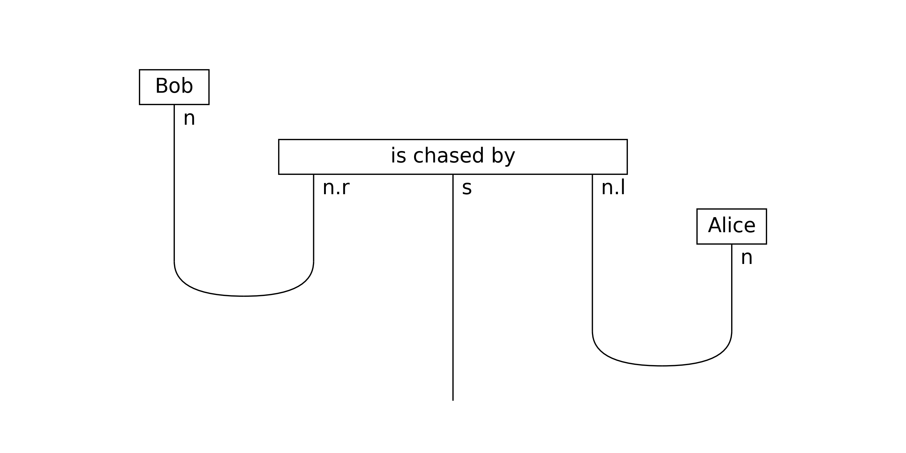
Proof–type correspondences can clarify what a grammar derivation establishes. They do not make arbitrary case assignment computationally identical to Hindley–Milner inference, nor do they guarantee native-speaker judgments. This implementation performs selected typed compositions and role bookkeeping; it does not implement general case-feature inference, a full Lambek prover, or monadic root syntax.
8 Compositional Distributional Semantics
A typed grammatical derivation can guide a semantic calculation. In the DisCoCat construction, a suitable interpretation maps grammatical types to semantic spaces and the derivation to a composition map (Coecke et al. 2010). This separates the choice of a grammar from the choice of lexical representations.
8.1 An explicit tensor contraction
Let \(a_i\) and \(b_k\) represent the two noun vectors and \(V_{ijk}\) a transitive verb tensor, with the middle index ranging over sentence features. The example calculation is
\[ m_j=\sum_{i,k}a_i V_{ijk} b_k. \qquad{(4)}\]
The source helper create_tensor_semantics() constructs
deterministic example tensors and evaluates their contraction. These are
generated representations, not pretrained embeddings or estimates from a
corpus. Exchanging the arguments changes the result when the selected
tensor is sensitive to that exchange; the formalism does not guarantee
every tensor will distinguish them.
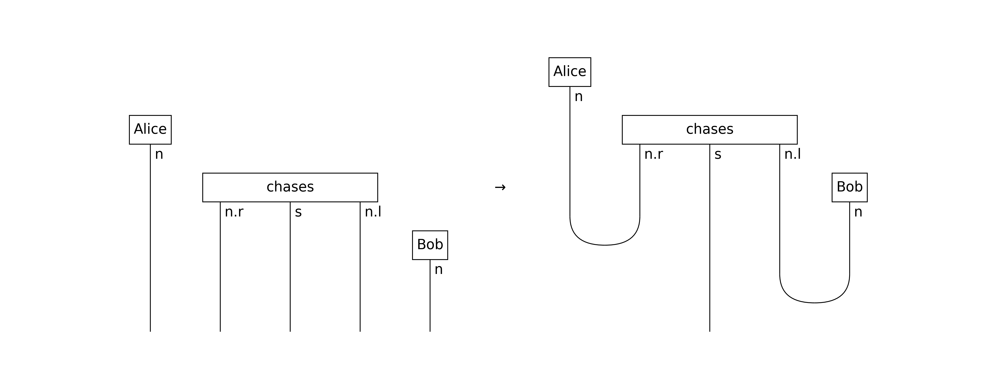
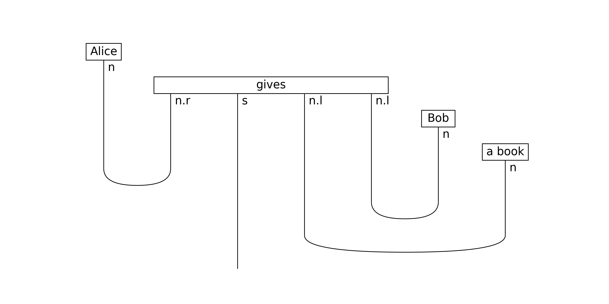
The diagrams make dependency on argument position inspectable. This is a representational advantage, not a measured interpretability result. Tensor entries can still be opaque, high-dimensional, or poorly estimated. Similarly, transformer attention is not automatically a functor or an enriched hom-matrix; such an identification needs domains, codomains, and law-preserving maps. A useful empirical comparison would train alternative composition models on the same data and test argument reversal and generalization on held-out constructions.
9 Duality Identities and Diagram Complexity
Cups and caps satisfy snake identities in the appropriate category with duals. A wire bent through a matching evaluation and coevaluation is equal to its identity morphism. The project constructs both sides and checks normal forms with DisCoPy; this is an executable algebraic example, not a new theorem.
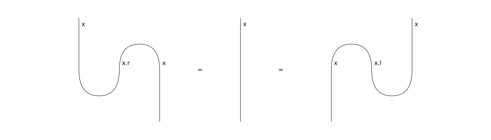
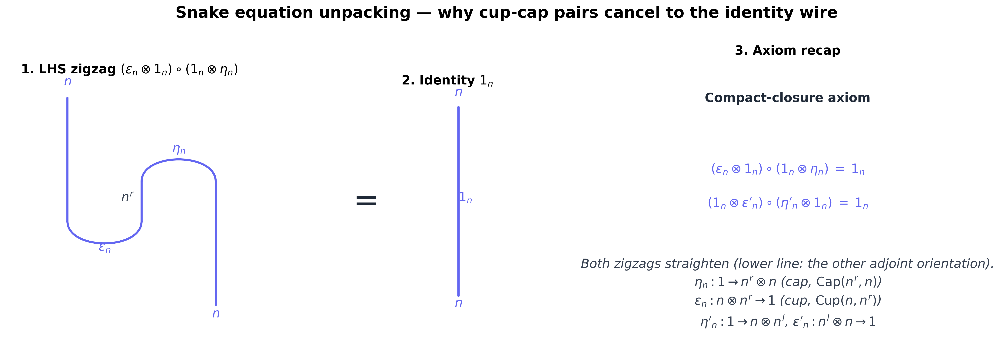
The complexity utilities report box count, cup count, cap count, depth, width, and normal-form size. The configurable score used by the examples is
\[ \kappa(D)=1N_{\mathrm{lex}}+0.5N_{\mathrm{cup}}+0.25N_{\mathrm{cap}}+0.1\,d(D). \qquad{(5)}\]
Here count_words counts every non-Cup/non-Cap box; in
diagrams containing a Swap, this is broader than a linguistic word
count. The four coefficients are the declared defaults of
syntactic_complexity_score() in the source, injected at
build time; they are chosen weights, not a fitted psycholinguistic
model. DisCoPy depth and width describe a particular representation and
do not directly determine qubit count, hardware depth, processing time,
or cognitive difficulty without an explicit compilation or measurement
model.
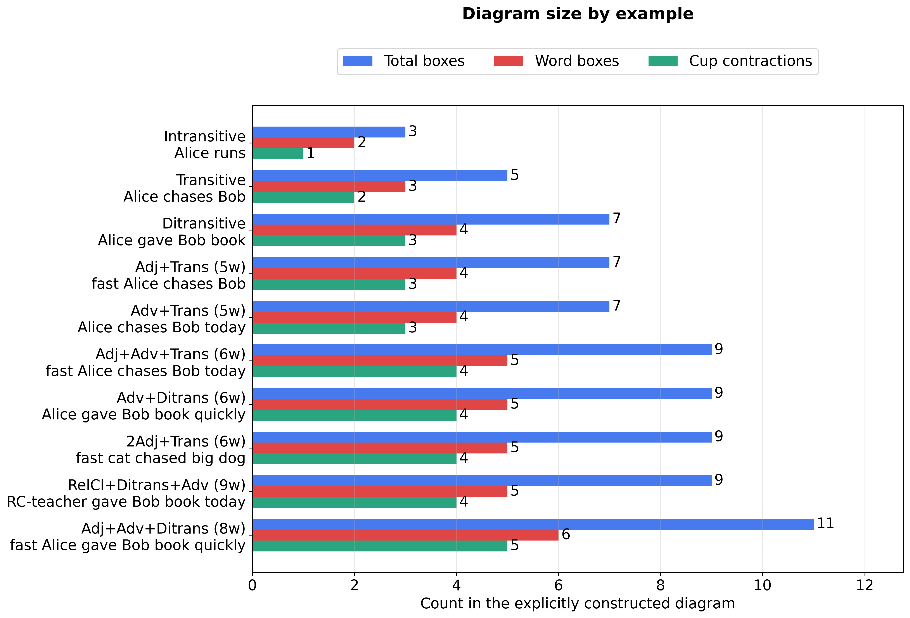
The legacy compute_pqc_decoherence_proxy() derives a
synthetic score from excess cups over caps and an arbitrary exponential
factor. Despite legacy field names, it computes neither topological
homology nor a physical decoherence rate. No physical or security
conclusion in this manuscript relies on that score.
10 Discourse: Entity Bookkeeping and State-Update Proposals
The same participant can occupy different grammatical roles across
sentences. The Discourse helper records explicitly supplied
entity names and role histories. For “Alice chases Bob. Bob fears Alice.
Alice smiles,” Alice’s stored sequence is NOM, ACC, NOM. This is
bookkeeping over supplied sentence objects. It does not infer that the
pronoun “she” refers to Alice.
from src.diagrams.string_diagram import Sentence, Discourse
discourse = Discourse()
discourse.add_sentence(Sentence.transitive("Alice", "chases", "Bob"))
discourse.add_sentence(Sentence.transitive("Bob", "fears", "Alice"))
discourse.add_sentence(Sentence.intransitive("Alice", "smiles"))
assert [r.name for r in discourse.role_history["Alice"]] == ["NOM", "ACC", "NOM"]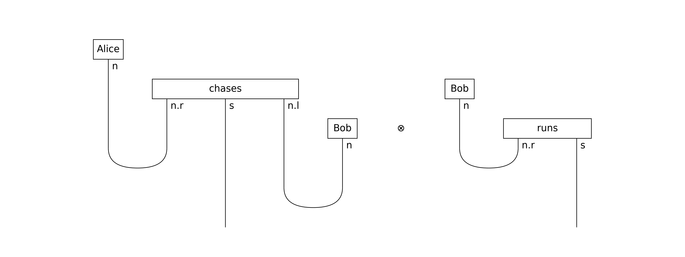
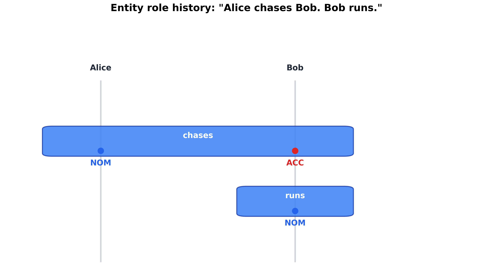
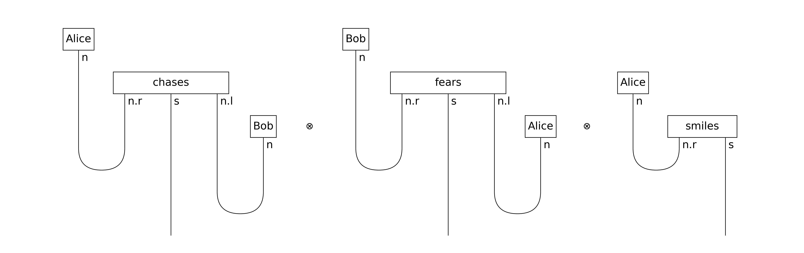
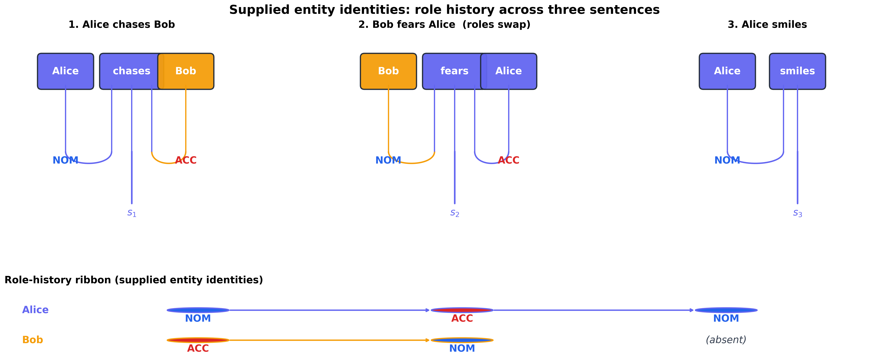
A full discourse model would specify persistent semantic states and the update maps applied by sentences. It would also need a policy for aliases, repeated names, pronouns, and distinct participants with identical surface forms. These are open requirements here. Quantum compilation and trainability would introduce further choices of encoding, ansatz, observable, optimization, and hardware. Local observables alone do not justify an unconditional claim that barren plateaus are absent. No quantum circuit is trained in this project.
11 Candidate Similarities and \([0,1]\)-Enrichment
For enrichment over the ordered monoid \(([0,1],\cdot,1)\), a finite hom-matrix \(Z\) must satisfy
\[ Z_{ii}=1,\qquad Z_{ik}\geq Z_{ij}Z_{jk}\quad\text{for every }i,j,k. \qquad{(6)}\]
The inequality follows the order convention used here. Symmetry is optional. Normalized conditional probabilities, cosine similarities, and attention weights do not generally satisfy these axioms. They are candidate inputs requiring separate justification.
The standard 8-role matrix in
src/enriched_cat/enriched.py is hand-selected and fails
some composition inequalities. For example, its NOM-to-DAT value is
0.45, whereas the NOM-to-ACC-to-DAT product is 0.85 × 0.55 = 0.4675. The
failure is retained as a useful counterexample; the matrix is not
described as an English estimate or a valid enriched category merely
because its entries lie in \([0,1]\).
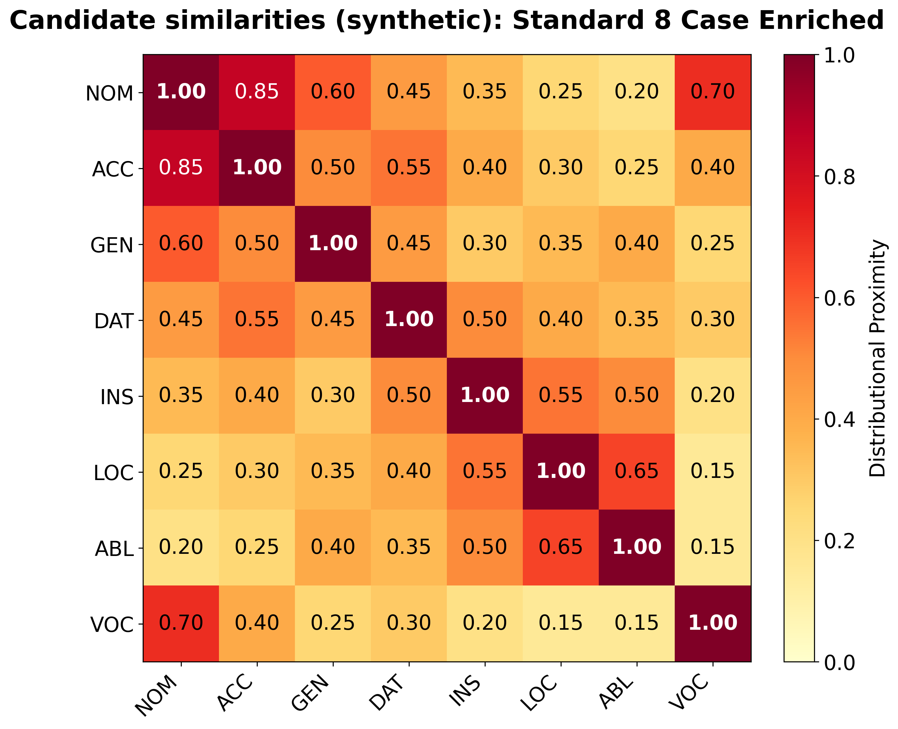
composition_closure() computes the maximum path product
using a Floyd–Warshall update \(Z_{ik}\leftarrow\max(Z_{ik},Z_{ij}Z_{jk})\).
It returns a new matrix and leaves the raw input intact. With entries at
most one and unit diagonals, cycles cannot improve a path product beyond
a cycle-free representative. The resulting finite closure satisfies the
multiplicative path inequalities up to the stated numerical
tolerance.
from src.enriched_cat.enriched import standard_enriched_category
candidate = standard_enriched_category()
closed = candidate.composition_closure()
assert not closed.full_composition_check()["violations"]Closure is a mathematical operation, not statistical validation. It raises selected similarities and can alter their interpretation, spectrum, magnitude, and clusters. Both raw and closed matrices should be retained in empirical work. Bradley, Terilla, and Vlassopoulos construct enriched structure from suitable text-extension probabilities (Bradley et al. 2021); this does not identify the present role matrix with their construction.
12 Magnitude, Weightings, and Numerical Sensitivity
For a finite similarity matrix \(Z\), a weighting \(w\) and coweighting \(v\) satisfy \(Zw=\mathbf1\) and \(v^T Z=\mathbf1^T\). When both exist, their sums agree because \(v^T Zw\) can be evaluated in either order. If \(Z\) is invertible, the matrix magnitude is
\[ \lvert Z\rvert=\mathbf1^T Z^{-1}\mathbf1. \qquad{(7)}\]
For a two-role example \(Z=\left(\begin{smallmatrix}1&a\\a&1\end{smallmatrix}\right)\) with \(0\leq a<1\), the weighting is \((1/(1+a),1/(1+a))\) and the magnitude is \(2/(1+a)\). At \(a=1\), the inverse does not exist, yet weightings and coweightings do exist and have sum one. Singularity therefore does not by itself make magnitude undefined.
The implementation uses an inverse for well-conditioned nonsingular matrices and a pseudoinverse when required. In the latter case it checks the left and right weighting residuals; a least-squares vector that fails these equations is not accepted as magnitude. Matrix mutation invalidates the cached inverse. A near-singular result remains sensitive to perturbations, and residual tolerances are numerical criteria rather than exact proofs.
For the raw illustrative matrix, the generated inverse-sum statistic is 2.49608, with two-norm condition number approximately 91.8505. Its object count minus that statistic is 5.50392. These describe this chosen matrix; the raw matrix’s failed enrichment axioms preclude presenting the result as a categorical invariant of a validated linguistic model.
Magnitude homology is a distinct graded construction (Leinster and Shulman 2021). The project does not construct its chain complex, differentials, or homology groups. A cup-minus-cap count is not a substitute. Likewise, a magnitude deficit is not automatically an entropy, a redundancy estimate, a reanalysis cost, or a security margin. Those interpretations require additional assumptions and evidence.
For positive hom-values, the transformation \(d(i,j)=-\log Z_{ij}\) converts the multiplicative composition inequality to a triangle inequality. Zero hom-values correspond to infinite distance, and symmetry is still an additional condition. This connection explains a mathematical relationship between similarity and distance; it does not identify arbitrary attention matrices with metric spaces.
13 Topos-Theoretic Bridges: Requirements and Present Scope
A geometric theory has a specified signature and axioms in geometric logic. Its classifying topos represents its models across suitable toposes. Morita equivalence concerns equivalence of classifying toposes, or equivalently the appropriate natural equivalence of model categories. Caramello’s bridge programme uses alternative presentations of a common topos to transport invariant information (Caramello 2016).
This is stronger than similar vocabulary or matching counts. Adding a definable relation symbol can change signature size without changing the modeled structure. Conversely, two theories can have equal numbers and arities of symbols while imposing incompatible axioms. Counts of sorts, relations, or axioms are therefore neither necessary nor sufficient conditions for Morita equivalence.
13.1 What the software represents
GeometricTheory stores names, relation arities, and
textual axiom descriptions. ClassifyingTopos is a
compatibility name for a presentation-profile container; it does not
construct a Grothendieck topology, a category of sheaves, or a
classifying universal model. The standard builder supplies 8 sorts and 8
relations; the minimal builder supplies 3 sorts and 3 relations. These
are presentation statistics only.
compare_theory_presentations() compares those
statistics. The deprecated check_morita_equivalence()
retains the same profile-comparison result with a warning; its Boolean
must not be interpreted as Morita equivalence.
bridge_transfer() reports
morita_equivalent=None and
transfer_possible=False because no equivalence witness is
supplied, even when profiles match.
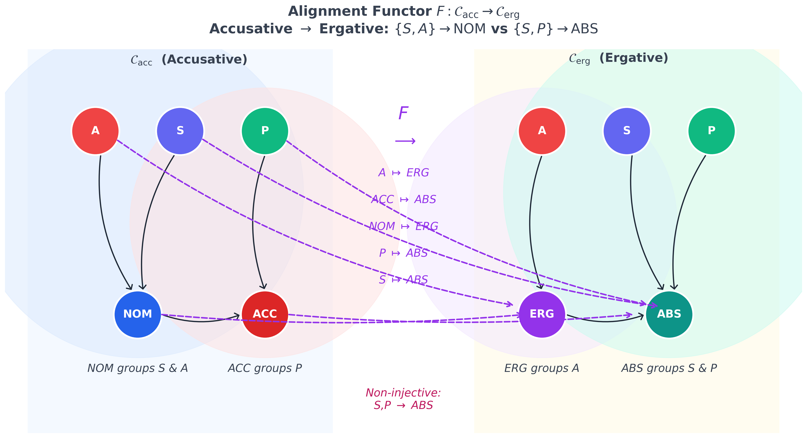
13.2 What a bridge would require
For two candidate case theories, a substantive result would specify their geometric syntax, exhibit the relevant models or sites, construct comparison functors, and prove the required equivalence and coherence. A transferred claim must then be identified as invariant under that equivalence. No such witness is constructed here. A two-object picture or a matching profile cannot replace these steps.
Topos logic also needs careful separation from probability and quantum mechanics. Heyting algebras are distributive, although excluded middle need not hold. Intuitionistic logic is not made classical by “sheaf decoherence,” and no cohomological collapse or thermodynamic limit follows from the present code. Formalizing linguistic theories and testing which invariants survive is a research direction, not an accomplished unification.
14 Bayesian Case-Role Beliefs and Active-Inference Motivation
Active inference supplies a motivation for relating generative models, uncertainty, and action (Friston et al. 2017). The implemented cognitive core is narrower: finite categorical beliefs, Bayesian likelihood updates, KL divergence, variational free-energy evaluation, and caller-defined policy scores.
For prior probabilities \(p_i\) and nonnegative likelihoods \(L_i\) with positive evidence \(e=\sum_i p_iL_i\), the update is \(q_i=p_iL_i/e\). Likelihoods need not sum to one over states. A negative likelihood is invalid even where the prior is zero, and an all-zero or disjoint-support likelihood is an error rather than a reason to invent a uniform posterior.
For a fixed generative pair \((p,L)\),
\[ F(q)=D_{\mathrm{KL}}(q\Vert p)-\sum_i q_i\log L_i =D_{\mathrm{KL}}(q\Vert p(\cdot\mid o))-\log e. \qquad{(8)}\]
The identity holds with consistent support conventions. It establishes the usual bound for this fixed model; it does not imply that free energies computed under different incoming priors and observations must decrease. Zero-probability terms are masked rather than evaluated as \(0\log0\).
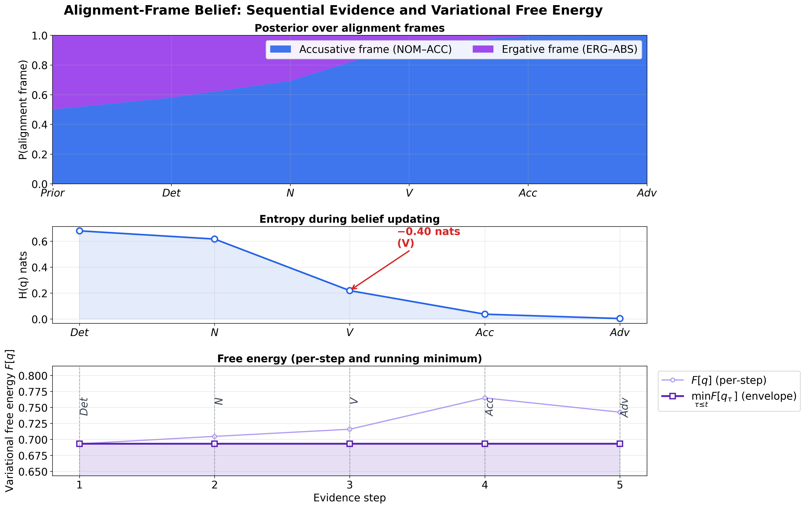
sequential_belief_update() consumes each supplied
likelihood once. distributional_case_assignment()
repeatedly consumes the same likelihood, optionally with a Markov
prediction step; its iteration parameter is therefore an
evidence-repetition choice, not just an optimizer budget. A single
categorical belief indexes the candidates declared by the caller. It
cannot simultaneously stand for every noun’s case, the whole parse tree,
and an alignment system without an explicit joint model.
Policy selection utilities evaluate supplied surprise, information-value, and utility vectors. A full active-inference model would need a specified generative process, observation predictions under policies, and preferences. Those components are not inferred from the graph drawing.
15 Cognitive Hypotheses and Testable Comparisons
A diagram can make a relation easy to inspect when its visual arrangement exposes a needed constraint. This motivates a hypothesis about case diagrams, not a universal claim that the brain prefers them. Drawing readability, algebraic correctness, and human reasoning performance are different outcomes.
A controlled study could compare matched diagrammatic and textual explanations of the same small role structures. Accuracy, response time, and transfer to new examples should be measured separately, with training time, diagram familiarity, language background, and visual complexity controlled. Counterexamples in which a diagram hides a needed distinction are as informative as successes.
The implementation’s prediction-error proxies provide another source of hypotheses. Multiplying a mismatch by a selected weight demonstrates sensitivity to that weight by construction. It does not establish that the weight is neural precision or that the output is an N400 or P600 amplitude. The scalar example is
\[ \mathrm{PE}=w\,|\mu_{\mathrm{pred}}-\mu_{\mathrm{obs}}|. \qquad{(9)}\]
To evaluate a physiological interpretation, a study would need a dataset, preprocessing specification, electrode and time-window definitions, parameter estimation on training data, and held-out comparison against simpler alternatives. The current project includes none of those measurements. Consequently the ERP-inspired functions in sec. 16.5 return uncalibrated model quantities.
The software suite exercises specific algebraic and numerical contracts. It does not certify every statement in this review, independently verify the implementation, or establish cognitive privilege. The reproducibility appendix sec. 25 states what the tests cover and what empirical claims remain outside their scope.
16 Distributional Utilities and Synthetic Filtering
Distributional active inference is an existing research programme
(Akgül et al.
2026). The local src/daif/ package is a
collection of experimental utilities inspired by distributional
representations; it is not a reproduction of that paper’s complete
algorithm. Several compatibility names predate the present
clarification. This section defines the quantities actually
computed.
16.1 Finite score distributions and projection
For role probabilities \(q\), a
row-stochastic transition matrix \(T\),
dimensionless score vector \(R\), and
\(\gamma\in[0,1]\),
push_forward_return() forms
\[ z=R+\gamma T^Tq,\qquad \mu=\sum_i q_i\delta_{z_i}. \qquad{(10)}\]
The mass at \(z_i\) is \(q_i\). Mean and variance use exact finite weighted sums. The stored quantile values use the generalized inverse of this discrete CDF, removing zero-mass support. They do not interpolate new values between distinct atoms. For equal mass at the support endpoints 0 and 10, the midpoint levels 0.125, 0.375, 0.625, 0.875 yield 0, 0, 10, 10.
Despite its legacy name,
distributional_bellman_operator() propagates beliefs and
repeats this score calculation. It does not back up state-conditioned
future-return distributions or sum discounted rewards. In the canonical
counterexample configuration — uniform transition entry 0.5, uniform
two-state belief, reward entries 1 and 0, and discount 0.9 — its score
mean is 0.95. The true infinite-horizon expected return for that Markov
reward process, computed from \((I-\gamma
T)^{-1}R\), is 5. This counterexample rules out treating the
utility as a Bellman solver; both quoted numbers are recomputed from the
same declared configuration at build time.
categorical_return_distribution() and
DistributionalReturn.to_categorical() share a C51-style
projection: clip supplied samples to fixed support, then split each
sample’s mass between adjacent atoms. Values outside the support
contribute to endpoint atoms rather than disappearing. Stored quantiles
do not reconstruct every property of the original law; projection of
equally weighted quantile samples is an explicit approximation.
16.2 Pairwise quantile regression and distortion
For current values \(\theta_i\), target samples \(y_j\), and midpoint levels \(\tau_i\), the update uses every pair \(\delta_{ij}=y_j-\theta_i\), as motivated by quantile regression (Dabney, Rowland, et al. 2018). Define \(H_\kappa\) as the ordinary Huber loss. The implemented coordinate update is
\[ \theta_i' = \theta_i + \alpha\frac1M\sum_j |\tau_i-\mathbf1_{\delta_{ij}<0}|\, \operatorname{clip}(\delta_{ij},-\kappa,\kappa). \qquad{(11)}\]
Here the Huber loss is unnormalized: its derivative is clipped at \(\kappa\). The learning-rate convention absorbs averaging over current coordinates. Comparing with a paper or implementation using \(H_\kappa/\kappa\) requires corresponding rescaling of \(\alpha\). The output is sorted to retain quantile order. Current and target sample counts can differ.
implicit_quantile_network_update() applies pairwise
Huber updates with distorted current probability levels; it contains no
neural network. Target values are equally weighted samples; supplied
target levels are validated metadata, not quadrature weights. The IQN
literature concerns learning quantile functions (Dabney, Ostrovski, et al. 2018). In this
helper, for \(0<\eta<1\),
optimistic distortion \(1-(1-\tau)^{1/\eta}\) emphasizes upper
values, while pessimistic distortion \(\tau^{1/\eta}\) emphasizes lower values.
Both reduce to the identity at \(\eta=1\); the direction reverses if \(\eta>1\), so the mode name alone is
insufficient without its parameter.
16.3 Filtering, single-factor messages, and factor scores
At each filter step the code computes \(p^-=T^Tq\) and \(q'=L\odot p^-/\sum_i L_i p^-_i\). It
stores the updated belief before any stopping decision. Diagnostics
include the complete posterior trajectory, the number of updates, and
stop_reason. Stopping requires small changes in both belief
and free energy; an increase in free energy alone is not an error
because successive priors change.
variational_message_passing() is a single-factor
calculation with an implicit uniform prior:
\[ q_i=\operatorname{softmax}_i(\lambda_{\mathrm{lik},i}o_i). \qquad{(12)}\]
It also returns \(\lambda_{\mathrm{prior}}+\lambda_{\mathrm{lik}}\) as bookkeeping. Prior precision does not determine a nonuniform categorical prior. Because the incoming message is constant, extra sweeps do not perform general loopy inference.
The legacy bethe_free_energy() is now also exposed as
factor_consistency_score(). Its actual formula is
\[ C(q)=\sum_a D_{\mathrm{KL}}(q\Vert\widehat f_a) -\left(\sum_i(d_i-1)\right)H(q). \qquad{(13)}\]
There is only one categorical distribution \(q\), and \(\widehat f_a\) is a normalized supplied vector. This is not a Bethe free energy: no joint factor marginals, individual variable marginals, or factor potentials are represented. Adjacency must be binary, and negative factor weights are rejected.
expected_information_gain() returns each observation’s
contribution \(p(o)D_{\mathrm{KL}}(q(\cdot\mid
o)\Vert q)\). Its sum is mutual information only if the supplied
likelihood columns sum to one across a complete observation alphabet. An
arbitrary list of candidate likelihood vectors is not automatically such
an alphabet.
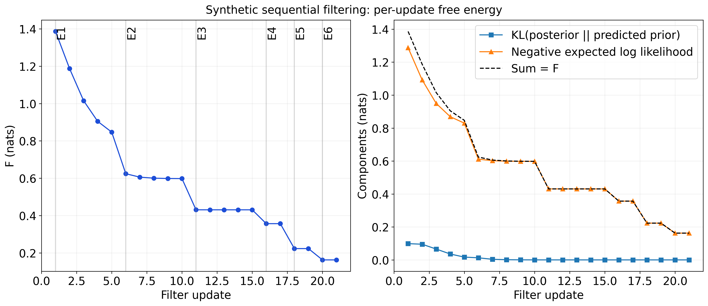
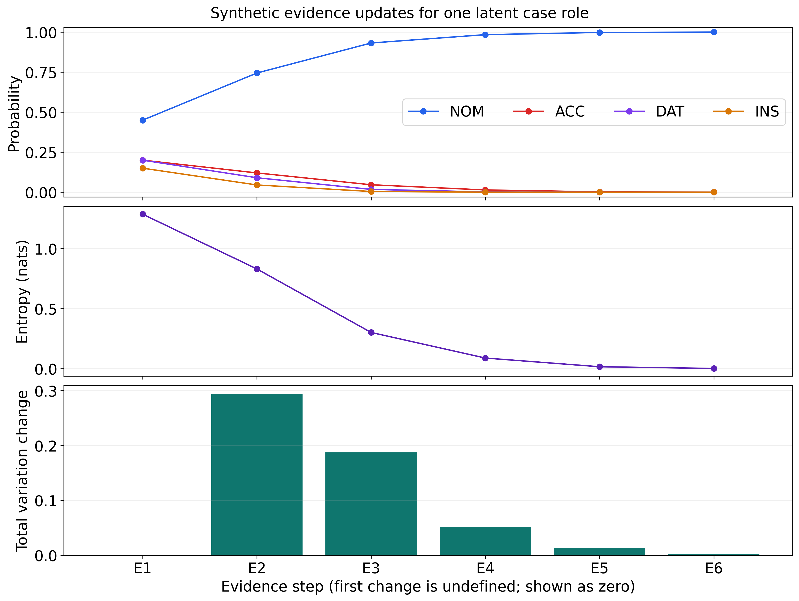
16.4 Caller-defined policy scores
G_policy() evaluates \(-q\cdot\ell-q\cdot e-\gamma q\cdot
u+\beta\operatorname{Var}(Z)\) for supplied finite vectors \(\ell,e,u\). This can express a chosen
surprise, information-value, utility, and risk tradeoff. It is not a
general expected-free-energy derivation. Expected log likelihood of one
observation is not ambiguity entropy, and posterior entropy is not
information gain. Units must be made compatible by the coefficients.
Policy probabilities are computed by a stable softmax of negative scores. Subtraction precedes temperature scaling to avoid overflow. Low temperature concentrates mass on minima, including equal treatment of tied minima; no optimality theorem about the environment follows.
16.5 Prediction-error and ERP-inspired proxies
The scalar error is weighted surprisal \(-w\log q_i\), with a small positive probability floor in the compatibility API. A separate function uses \(wW_1\) between two reconstructed quantile distributions. These are distinct mismatches, not interchangeable derivations of one physiological observable.
The N400-inspired proxy is \(-s\lambda|m-m_0|\). The P600-inspired proxy
is \(s
k\max(0,\lambda_{\mathrm{post}}-\lambda_{\mathrm{prior}})\mathrm{DPE}\).
Severity \(s\), scaling \(k\), and precision values are caller
inputs. The waveform utility places these amplitudes in Gaussian
templates with specified millisecond centers and widths. Millisecond
timing labels do not calibrate amplitude to microvolts; compatibility
fields ending in _uV still contain uncalibrated values.
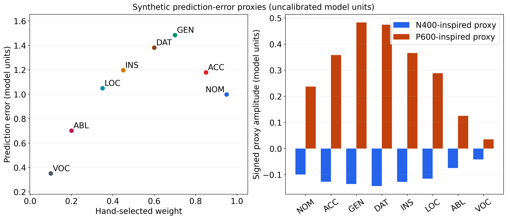
16.6 Metrics and reconstruction conventions
Wasserstein distance uses both stored probability-level grids, even when their lengths match. Between levels it linearly interpolates quantiles and holds tails constant to zero and one. Integration for orders one and two is exact for these reconstructed laws. It is not exact for an unknown originating distribution, and no universal convergence rate is asserted.
Histogram KL and entropy depend on the binning and smoothing
parameters. quantile_coverage() compares observations with
supplied quantiles; calling it does not itself create held-out
calibration data. convergence_diagnostics() reports changes
in a supplied series; a small change is not proof of a unique fixed
point.
16.7 Scope and extensions
A genuine distributional-control experiment would need a reward process, state-conditioned return laws, a justified Bellman or inference operator, parameter learning, baseline comparisons, and independent evaluation data. An EEG experiment would additionally require physiological calibration. Neither is supplied here. The present utilities are useful as explicit numerical examples because these missing steps are visible. The seeded synthetic computations in sec. 17 characterize the filtering, calibration, projection, and sensitivity behavior of these utilities on their declared inputs; they remain synthetic and add no empirical evidence.
16.8 CEREBRUM as a design vocabulary
The 8 familiar case labels can organize a proposed agent architecture: actor, affected content, recipient, instrument, context, source, possession, and address. This analogy does not establish eight neural modules or a universal factorization of cognition. The software does not implement a complete CEREBRUM agent. Proposed architectural mappings should be evaluated as engineering choices with explicit interfaces and tasks.
17 Synthetic Statistical Behavior of the Utilities
The preceding sections define what each utility computes. This
section reports what those utilities do on their declared
synthetic inputs, computed by the seeded runner in
src/experiments/. Every quantity here is synthetic: inputs
are fixed or seeded constructions, replication is resampling over seeded
runs, and intervals summarize replication-to-replication variation of
the computation itself. No corpus, participant, physiological, hardware,
or deployed-agent evidence is involved, and none of these numbers
estimates a property of any language or brain.
The runner executes configured arms with a seeded PCG64 generator
(seed 20260907, 256 replicates per study) and emits a schema-annotated
result file whose configuration hash is
0ead4d99c7d6617c1d07342dd37636db5b07e14afe95214308f6b9a92fb7a5d1;
the manuscript quotes only registry-declared identifiers from that file
through injection. Replicate-level means carry two-sided 95%
normal-approximation intervals (normal quantile 1.95996); point maxima
and residuals are reported as descriptive bounds without intervals.
There are no p-values, significance labels, or comparisons with
empirical work in this section, and all configured arms are reported
without multiplicity adjustment.
17.1 Filtering and transition ablation
The filtering study assimilates a known synthetic likelihood over 3 roles, repeating that same-likelihood assimilation 3 times per replicate with a tight convergence threshold, and compares the stored trajectory with the exact repeated-Bayes closed form. Mean posterior probability of the true role after the final assimilation is 0.997309 with interval [0.996974, 0.997644]. A paired arm re-runs the same repeated assimilation with a banded informative transition on identical draws, so the paired mean log-probability difference -0.0214211 nats with interval [-0.0225471, -0.0202951] isolates the effect of changing the transition while the likelihood is held fixed. The stored trajectory agrees with the closed form to a maximum deviation of 3.33067e-16, and the mean final free energy is 0.157986 nats with interval [0.150038, 0.165933]. Posterior mode match is reported descriptively as 1.
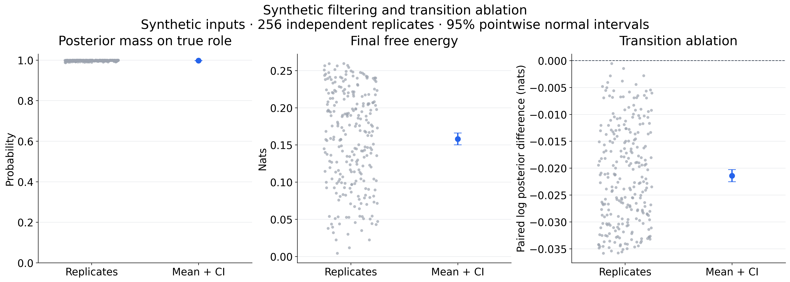
17.2 Calibration of quantile coverage
For a finite discrete return law, the exact coverage target of a quantile level is its distribution function \(F(Q(\tau))\), which need not equal \(\tau\) under the discrete generalized inverse; that atom gap is a separate descriptive quantity. With 19 levels and 200 observations per replicate, observed coverage of the stored quantiles is compared with that exact target. The mean absolute deviation from the exact discrete-law target is 0.0202648 with interval [0.0187924, 0.0217371]; this deviation quantifies Monte Carlo sampling error of the empirical coverage estimate around the exact discrete target, not distance from a continuous coverage convention. The largest per-replicate deviation is 0.0698747, and the largest per-level gap between mean observed coverage and the mean exact target is 0.00392405. These diagnostics are properties of the stored representation and the seeded sampling scheme, not estimates from data.
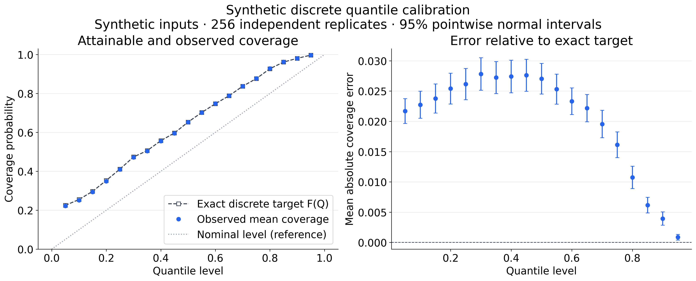
17.3 Projection and quantile identities
The C51-style projection must conserve total mass and preserve the mean of clipped samples. Across seeded replicates and configured atom counts, the maximum mass residual is 2.22045e-16, the mean mean-exactness residual is 6.78033e-17 with interval [6.10892e-17, 7.45174e-17], and the largest such residual is 3.33067e-16. The Wasserstein reconstruction satisfies its self-distance identity to at most 0. The pairwise Huber update agrees with its finite-difference numerical gradient characterization to at most 8.15287e-11; this is a numerical agreement check of the implemented gradient, not a machine-precision identity proof.
17.4 Sensitivity sweeps
Configured sweeps vary one configuration parameter at a time and report every arm against its reference. Summarizing those arms, the largest absolute paired mean effect is 0.252565 for the discount sweep, 0.120347 nats for the return-entropy bin-count sweep, and 0.757051 nats for the policy-temperature sweep. These are descriptive effect sizes of a synthetic computation under parameter changes; they measure the arithmetic sensitivity of the utilities, not any cognitive or empirical quantity.
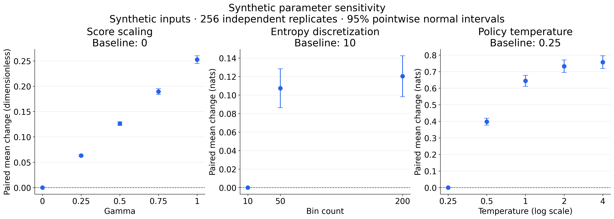
17.5 Validity controls
The runner also executes analytic negative controls. The analytic-identity control suite reports 1, and the invalid-input control suite reports 1, where 1 means all analytic identity checks passed and 1 means all malformed-input rejections behaved as declared. Separately, the crisp two-role POVM example satisfies completeness to a mean residual of 2.1684e-17 with interval [1.56478e-17, 2.77203e-17] and a maximum residual of 2.22045e-16 across replicates, consistent with the matrix contracts in sec. 19.
17.6 Interpretation boundaries
Three boundaries delimit this section. First, replication intervals summarize variation across seeded runs of deterministic code; they are not sampling distributions over any population. Second, every configured arm is reported without multiplicity adjustment, and the configurations themselves are synthetic choices, not estimated models. Third, agreement with closed forms and numerical gradients validates the implementation of a stated computation; it neither extends the mathematics beyond its assumptions nor converts any utility into a Bellman solver, a general inference engine, or a measurement model. The reproduction path for every number in this section is documented in sec. 25.
18 Quantum Diagram Connections and Their Assumptions
Typed diagrams also occur in quantum information, where wires denote systems and boxes denote operations. This shared notation makes some structural comparisons possible. It does not identify a grammatical derivation, a quantum circuit, and a Bayesian update as the same process.
A categorical interpretation must specify its source category, target category, object map, arrow map, and preserved structure. The nonsymmetric ordering of pregroup grammar is especially important: a wire exchange available in a symmetric quantum-process category is not automatically a grammatical rewrite. A cup and a general ZX spider are also different operations; the presence of duality does not supply all the additional algebraic laws of a spider.
The local implementation uses DisCoPy diagrams and finite-dimensional NumPy matrices. It does not implement ZX rewriting, generalized-flow circuit extraction, a topological quantum neural network, a TQFT evaluation, a sheaf of semantic channels, or a hardware compiler. These are possible external frameworks for future work, not local validation results. No conclusion about quantum advantage, trainability at arbitrary scale, thermodynamic semantic capacity, or protection against prompt injection is drawn from their names.
The implemented measurement model in sec. 19 can be evaluated directly and is consequently a more concrete point of comparison. Even there, a probabilistic analogy does not imply that linguistic cognition uses physical quantum coherence. A useful next experiment would compare a specified measurement-based classifier against a matched classical model and report exactly which resources and assumptions differ.
19 Case Labels as Measurement Outcomes
A positive-operator-valued measure (POVM) is a family of positive semidefinite Hermitian effects \(E_c\) that sum to the identity. A density matrix \(\rho\) is positive semidefinite and Hermitian with trace one. Under these assumptions,
\[ P(c\mid\rho)=\operatorname{Tr}(E_c\rho),\qquad\sum_cP(c\mid\rho)=1. \qquad{(14)}\]
The sum identity follows by linearity of trace. The implementation checks finite entries, dimensions, Hermiticity, positivity, completeness, and density normalization within explicit floating-point tolerances. A symmetric eigenvalue routine alone would not validate Hermiticity, which is checked separately. An individual effect is also required to lie below the identity.
crisp_case_povm() constructs orthogonal coordinate
projectors. A projective measurement does not guarantee a deterministic
outcome for every state: a mixture or superposition can yield several
outcomes. The convenience semantic_state() constructs a
diagonal mixture from supplied nonnegative role weights; it does not
create coherence or entanglement.
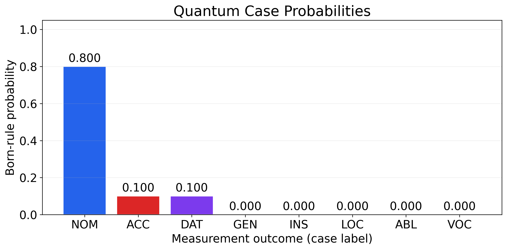
graded_case_povm() creates diagonal effects from
normalized role weights on basis coordinates.
fluid_s_povm() rotates a two-role measurement according to
a supplied context parameter. These are finite mathematical models.
Interpreting their outcomes as case assignments is a chosen labeling
convention, not a proof that grammatical alignment equals a quantum
reference frame.
A general caller can provide a coherent density matrix directly, subject to validation. Demonstrating an interference effect would require a specified state family and measurement whose probabilities depend on off-diagonal components. The canonical figure uses commuting diagonal objects and admits an ordinary classical probability interpretation. No physical quantum advantage or semantic channel-capacity result is established. The seeded completeness check of the canonical example is reported in sec. 17.5.
20 Proposed Case-Labeled Agent Interfaces
Role labels can make an agent interaction easier to inspect: a requester initiates a task, an instrument executes an operation, an object is processed, and a recipient receives a result. A case-based interface could attach such labels to typed records and check allowed compositions. This is an engineering proposal, not a claim that existing agent protocols lack semantics or that linguistic case alone defines a secure protocol.
A useful record would include authenticated actor identity, operation type, resource identifier, authority scope, input provenance, and result destination. These fields must be distinguished from user-editable text. Calling a piece of content “NOM” cannot grant it authority.
| Proposed label | Possible interface meaning | Required additional information |
|---|---|---|
| NOM | Initiating actor | Authenticated identity and authorization |
| INS | Tool or executor | Capability, constraints, and executable operation |
| ACC | Processed content | Origin, trust level, and allowed uses |
| DAT | Recipient | Destination authorization and disclosure scope |
| LOC / ABL | Context / source | Actual environment and provenance records |
A composition check can establish that an output type is accepted by the next operation. It cannot by itself establish that either operation is truthful, authorized, privacy-preserving, or successful. The present repository supplies no network transport, protocol adapter, credential system, or reference monitor. A future prototype should connect the labels to real capability checks and evaluate both rejected unauthorized actions and permitted legitimate actions.
Entity histories from sec. 10 could support an interaction trace if identities were supplied reliably. They would still need explicit semantics for state updates, delegation, revocation, and failures. No fixed-point theorem for multi-agent behavior follows from representing a dialogue as a graph.
21 Role Policies and the Limits of Type-Based Security
A useful prompt-injection analogy is the attempted promotion of processed content into instructions with authority. The security module represents selected role transitions and reports violations relative to a supplied finite policy. It operates on already assigned labels; it does not read arbitrary text and infer trustworthy authority.
detect_type_violation() rejects roles outside its
category before considering identity transitions.
CaseFrameValidator checks membership and pairwise licensed
connections, refreshing its adjacency view when the mutable category
changes. The assignment checker accepts a connection in either direction
for its pairwise compatibility test, so its result must not be mistaken
for verification of a directed execution trace. Reported severities are
hand-selected policy scores, not calibrated attack probabilities.
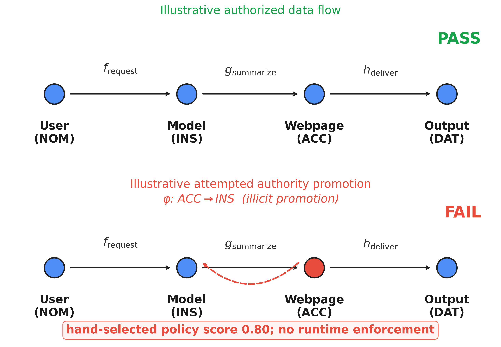
The compatibility class MonoidalFunctor checks pairwise
role separation and existence of corresponding edges. Its method name
preserves_tensor() is historical: the implementation has no
tensor objects or tensorator coherence data. Monoidal functors need not
be injective on objects, and two roles mapping to one object does not
establish nonmonoidality. Indeed, grammatical alignment deliberately
merges some argument distinctions. Whether a merge is prohibited is a
policy decision.
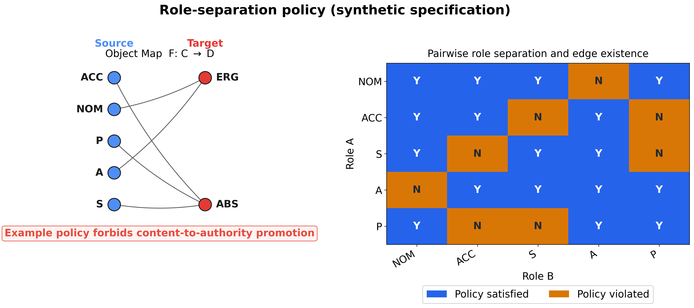
21.1 Requirements for operational enforcement
A deployed system would need authenticated provenance, trustworthy assignment of roles, authorization at the tool boundary, and a check that the executed action matches the checked request. It would also need adversarial tests spanning indirect instructions, multi-turn context, confused delegation, and permitted role changes. The repository implements none of those system boundaries and reports no detection rate or security benchmark.
21.2 Limits
Role labels alone cannot detect deception, validate factual claims, or prevent disclosure. A rejected label transition may be a legitimate request under a different policy; an accepted transition may carry harmful or false content. Magnitude, graph topology, and quantum terminology provide no automatic security guarantee. The finite checker remains useful as a transparent specification example when its inputs, rule set, and missing enforcement layer are stated.
22 Conclusion
Case diagrams provide a compact setting for comparing relational labels, typed composition, uncertainty, and interpretation. The executable examples show how a chosen representation can be built and inspected. They also expose where a proposed identification fails: a similarity table may violate enrichment, profile counts do not decide Morita equivalence, a finite score distribution is not a Bellman return law, and a type-policy result is not a deployed security guarantee.
The project’s contribution is an evidence-bounded synthesis with explicit computational contracts. Pregroup reductions and tensor calculations are implemented examples. Role-history drawings are supplied bookkeeping. Numerical figures use synthetic inputs. The measurement example computes valid probabilities for specified matrices. Cognitive advantage, physiological interpretation, inter-theory transfer, and operational agent security remain hypotheses or engineering proposals.
22.1 Next experiments and proofs
Priority extensions follow from the missing evidence. A linguistic evaluation should specify a corpus and annotation scheme, estimate parameters on training data, and test held-out constructions against baselines. An enrichment study should report the raw matrix, axiom failures, closure changes, and sensitivity of magnitude. A topos bridge should supply actual theories and an equivalence witness. A cognitive or EEG study should prespecify outcomes and compare the model with simpler explanations. A protocol prototype should enforce authenticated capabilities and test the full execution boundary.
Each extension should preserve counterexamples that can falsify its checks. Passing tests supports the stated software contracts; it neither supplies absent experiments nor proves all mathematical interpretations. Keeping these distinctions explicit makes further work reproducible and its results easier to assess.
23 Appendix A: Schematic Construction Panel
The panel collects eight hand-authored construction sketches. Its arcs are dependency-style annotations, not constituency trees produced by a parser. Some panels include a checked simple type template; the relative-clause and causative sketches display their interpretive structure without claiming a completed formal derivation.
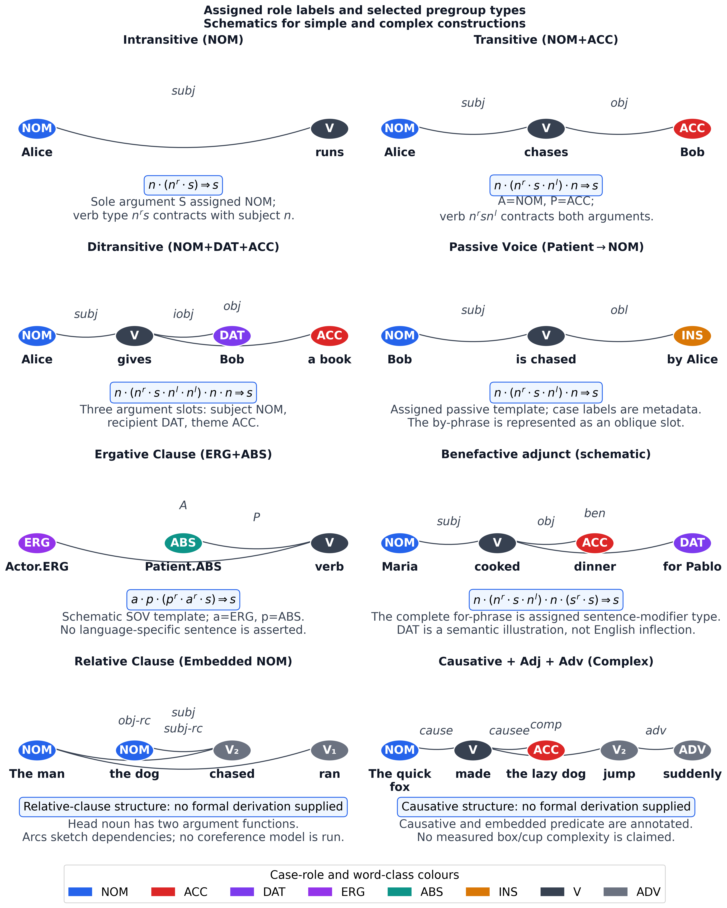
The English examples use assigned NOM/ACC/DAT/INS labels to illustrate argument functions; those labels do not assert corresponding English case inflections. A benefit recipient or passive agent should not be equated with a particular morphological case across languages. Readers seeking executable reductions should use the DisCoPy constructors in sec. 6, whose types and codomains can be checked directly.
24 Appendix B: Notation and Conventions
24.1 Linguistic labels
S, A, and P denote the argument primitives defined in sec. 4. NOM, ACC, GEN, DAT, INS, LOC, ABL, VOC, ERG, and ABS are case labels used in the examples. Their interpretation depends on the language or modeling context. Case color is redundant with a written label; it does not encode evidence strength.
24.2 Algebra and probabilities
| Symbol | Meaning here |
|---|---|
| \(A,B,C\) | Objects or specified role labels |
| \(f:A\to B\) | A typed arrow; its exact semantics must be supplied |
| \(g\circ f\) | First \(f\), then \(g\) |
| \(\otimes\) | Monoidal product in a specified category |
| \(n,s,n^l,n^r\) | Noun, sentence, and adjoint types |
| \(Z_{ij}\) | Candidate or verified hom-value, distinguished in context |
| \(|Z|\) | Weighting/coweighting sum when defined |
| \(q,p,L,T\) | Posterior, prior, likelihood, row-stochastic transition matrix |
| \(F\) | Variational free energy for a specified fixed model |
| \(G\) | Caller-defined policy score in the compatibility API |
| \(\tau,Q(\tau)\) | Quantile probability level and value |
| \(E_c,\rho\) | POVM effect and density matrix |
| \(W_p\) | Wasserstein distance of order \(p\) under a stated reconstruction |
Natural logarithms give entropy and KL in nats. Similarity weights
and synthetic scores are dimensionless unless a scale is explicitly
supplied. Variances have squared score units. ERP-inspired amplitudes
are uncalibrated model units; waveform time coordinates are
milliseconds. return, Bellman,
Bethe, MonoidalFunctor, and
ClassifyingTopos in legacy APIs do not override the
narrower operational definitions in the text.
25 Appendix C: Reproduction and Verification Scope
Two different counts matter and must not be conflated. The suite collects 1627 tests in 81 files across 11 source subpackages; a collection count alone certifies nothing. A passing run is certified only by the source-bound quality receipt, which records 1627 passed, 0 failed, and 0 skipped tests with 6175 of 6490 statements covered (93.17% combined). The receipt binds that evidence to source fingerprint 80819a3816e4 and was recorded at 2026-09-08T07:04:03.730105+00:00; a receipt whose fingerprint no longer matches the tree is rejected. The metrics writer records installed NumPy 2.4.4 and DisCoPy 1.2.2.
The suite covers role-graph construction; sampled endpoint and weight laws; explicit pregroup reductions; tensor evaluation; finite probability calculations; quantile update conventions; matrix magnitude and composition checks; POVM and density validation; finite role-policy checks; the seeded synthetic studies of sec. 17; figure generation; and manuscript substitution. It uses real numerical arrays, files, and subprocesses. Test counts, coverage, and synthetic study outputs are not mathematical proofs or empirical effect sizes.
Negative controls include malformed probability inputs, impossible observations, non-Hermitian effects, incompatible quantile grids, a composition-violating matrix, a matching theory profile without a transfer witness, manuscript math containing literal dollar delimiters, unregistered or nonfinite manuscript variables, and prose or captions containing numeric literals that no registry identifier backs. These cases matter because a validator that accepts everything can produce a superficially green run.
From the project root, install and verify with:
uv sync --frozen --extra mcp
uv run python scripts/quality_gate.py --coverage
uv run python scripts/run_experiments.py
uv run python scripts/generate_diagrams.py
uv run python scripts/inject_variables.py
uv run python scripts/validate_project.pyAll canonical numerical examples are synthetic. Seeds or fixed arrays are declared in source. The project has no corpus split, participant sample, EEG dataset, quantum-hardware receipt, or operational-agent security evaluation. This revision is identified by 10.5281/zenodo.22653315; the series uses DOI 10.5281/zenodo.19695259. The live deposit state is reported at the version-record link.
The first command uses the lockfile; the quality gate runs lint,
types, and the full coverage-enforced suite and writes the receipt under
output/reports/. The experiments runner writes the
schema-annotated synthetic results consumed by injection. Figure
generation writes ../figures/ and the figure registry,
binding each entry to the source fingerprint it was rendered from.
Injection writes output/manuscript/ and the variable
manifest from the canonical numbered sources; validation re-checks every
binding. Render through the sibling template engine using the
lifecycle-qualified project selector documented in the repository
README. Rendered PDFs require visual inspection in addition to text,
link, and citation checks.